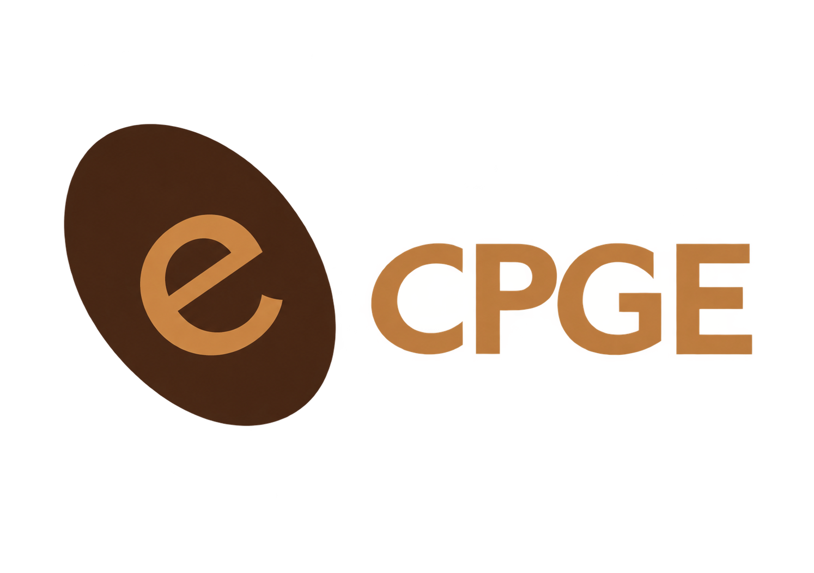
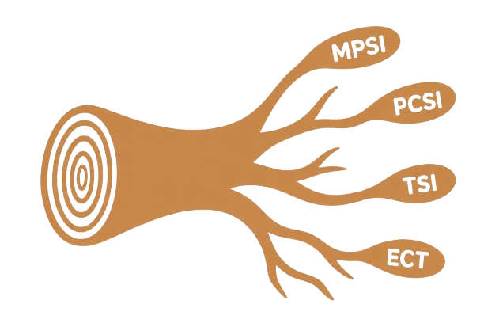
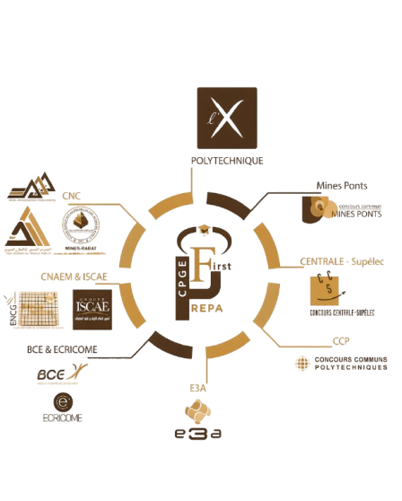

Les Classes Préparatoires aux Grandes Écoles
Les Classes Préparatoires aux Grandes Écoles (CPGE) constituent une formation post-bac exigeante destinée aux
étudiants souhaitant se préparer aux concours d’accès aux grandes écoles. Présentes dans plusieurs villes du
Maroc, elles offrent un enseignement intensif dans différentes disciplines, notamment les mathématiques, la
physique, la chimie, l’informatique, les sciences de l’ingénieur, ainsi que l’économie et la gestion selon la
filière choisie.

Intégrer une CPGE, c’est entrer dans un environnement où la rigueur, la régularité et la persévérance occupent
une place centrale. Le rythme de travail est soutenu, les notions sont approfondies et les étudiants sont
constamment amenés à développer leur raisonnement, leur autonomie et leur capacité à résoudre des problèmes
complexes. Cette exigence constitue précisément l’une des principales richesses de la formation : elle ne prépare
pas uniquement à un concours, mais développe des méthodes de travail et des compétences utiles pour la suite du
parcours académique.
Au Maroc, les CPGE occupent une place importante dans l’enseignement supérieur et représentent une voie
privilégiée vers de nombreuses grandes écoles d’ingénieurs, de commerce et de management. Après deux années de
préparation, les étudiants peuvent présenter différents concours et poursuivre leurs études dans des
établissements de haut niveau, au Maroc comme à l’étranger.
Mais une CPGE, c’est aussi une expérience humaine : apprendre à travailler sous pression, gérer son temps,
collaborer avec ses camarades, surmonter les difficultés et progresser continuellement. Pour ceux qui recherchent
un parcours exigeant et souhaitent repousser leurs limites, la CPGE représente ainsi bien plus qu’une simple
préparation aux concours : c’est une étape de construction, de dépassement et d’ouverture vers de nouvelles
possibilités.
Les filières des CPGE
Les Classes Préparatoires aux Grandes Écoles (CPGE) offrent plusieurs filières, permettant à chaque étudiant
de s’orienter selon ses goûts, ses aptitudes et son projet d’études. Le choix d’une filière ne doit pas
uniquement dépendre des matières dans lesquelles l’étudiant obtient les meilleures notes, mais également de sa
manière de réfléchir, de ses centres d’intérêt et du domaine dans lequel il souhaite évoluer. À la CPGE Babs
Sahara, plusieurs parcours sont proposés :

MPSI — Mathématiques, Physique et Sciences de l’Ingénieur
(Cette filière est disponible au CPGE Babs Sahara)
La MPSI s’adresse principalement aux étudiants qui apprécient les mathématiques, la logique et le raisonnement
scientifique. Elle accorde une place importante aux mathématiques et à la physique, accompagnées notamment
d’informatique et de sciences de l’ingénieur. C’est une filière qui développe fortement les capacités
d’abstraction et de résolution de problèmes. Elle peut particulièrement convenir à un étudiant méthodique, curieux
et à l’aise avec le raisonnement mathématique. En contrepartie, son rythme et son niveau d’exigence nécessitent
une grande régularité dans le travail.
PCSI — Physique, Chimie et Sciences de l’Ingénieur
(Cette filière est disponible au CPGE Babs Sahara)
La PCSI est particulièrement adaptée aux étudiants attirés par la physique, la chimie et la compréhension des
phénomènes scientifiques. Les mathématiques y restent importantes, mais la formation accorde une place
significative à l’expérimentation, à la modélisation et aux sciences de l’ingénieur. Elle offre donc un profil
relativement équilibré entre théorie et applications. Elle demande toutefois de bonnes capacités dans plusieurs
matières et une organisation efficace pour suivre le rythme de la préparation.
MP — Mathématiques et Physique
(Cette filière est disponible au CPGE Babs Sahara)
La MP correspond à une deuxième année de préparation fortement orientée vers les mathématiques et la physique.
Elle approfondit considérablement les notions étudiées durant la première année et demande un raisonnement
rigoureux ainsi qu’une bonne capacité d’abstraction. Elle peut convenir aux étudiants qui apprécient
particulièrement les mathématiques et souhaitent poursuivre dans un parcours scientifique exigeant. Comparée à la
PSI, elle donne davantage de poids aux mathématiques et au raisonnement théorique.
PSI — Physique et Sciences de l’Ingénieur
(Cette filière est disponible au CPGE Babs Sahara)
La PSI associe les mathématiques, la physique et les sciences de l’ingénieur, avec une attention particulière
portée à la modélisation et à l’étude des systèmes. Elle convient aux étudiants qui souhaitent conserver une
solide base théorique tout en travaillant davantage sur des applications concrètes et des systèmes physiques. Elle
se distingue ainsi de la MP par une présence plus importante des sciences de l’ingénieur. Elle reste néanmoins une
filière exigeante qui demande rigueur, compréhension et régularité.
ECS — Économie et Commerce
(Cette filière est disponible au CPGE Babs Sahara)
La filière ECS s’adresse aux étudiants souhaitant se diriger vers les grandes écoles de commerce et de
management. Contrairement aux filières scientifiques, elle associe notamment mathématiques, économie, culture
générale et langues. Elle développe ainsi des compétences variées : analyse quantitative, expression,
compréhension économique et ouverture culturelle. Elle convient particulièrement aux étudiants intéressés par le
monde économique et commercial, mais demande également une grande capacité d’organisation afin de progresser dans
des disciplines très différentes.
PC — Physique et Chimie
La filière PC est principalement axée sur la physique et la chimie, avec un enseignement solide en mathématiques.
Elle convient aux étudiants qui apprécient la compréhension des phénomènes physiques, les transformations
chimiques et la modélisation scientifique. Elle se distingue notamment par l’importance accordée à la chimie par
rapport aux filières MP et PSI. Son principal défi reste la nécessité de maîtriser simultanément plusieurs
disciplines scientifiques à un niveau élevé.
TSI — Technologie et Sciences Industrielles
La filière TSI est orientée vers la technologie, les sciences industrielles et l’ingénierie. Elle associe
notamment mathématiques, physique et étude des systèmes industriels, avec une approche davantage appliquée et
concrète. Elle convient particulièrement aux étudiants intéressés par le fonctionnement, la conception et
l’analyse des systèmes technologiques. Par rapport aux filières MP, PC ou PSI, elle accorde une place plus
importante aux applications industrielles et aux sciences de l’ingénieur.
Les grandes écoles accessibles après CPGE
La CPGE ne constitue pas une formation qui mène à une seule école: elle prépare principalement aux concours
d’accès à de nombreuses grandes écoles, au Maroc comme à l’étranger. Le choix des écoles dépend de la filière
suivie et du concours présenté.
Pour les filières scientifiques MP, PSI et TSI, les étudiants peuvent notamment passer le Concours National
Commun (CNC), qui donne accès à plusieurs grandes écoles d’ingénieurs marocaines ou assimilées. Parmi les
établissements du réseau figurent notamment:

EMI — École Mohammadia d’Ingénieurs
EHTP — École Hassania des Travaux Publics
ENSIAS — École Nationale Supérieure d’Informatique et d’Analyse des Systèmes
ENSEM — École Nationale Supérieure d’Électricité et de Mécanique
ENIM — École Nationale de l’Industrie Minérale
AIAC — Académie Internationale Mohammed VI de l’Aviation Civile
ESITH — École Supérieure des Industries du Textile et de l’Habillement
Les étudiants peuvent également, selon leur filière et les conditions des concours, candidater à des grandes
écoles françaises, notamment à travers des concours tels que Centrale-Supélec, Mines-Ponts, CCINP, X/École
Polytechnique ou ENS.
Pour les filières ECS et ECT, l’orientation est principalement tournée vers les écoles de management. Au Maroc,
le CNAEM permet notamment de candidater aux différentes ENCG : Agadir, Casablanca, El Jadida, Fès, Kénitra,
Marrakech, Oujda, Settat et Tanger.